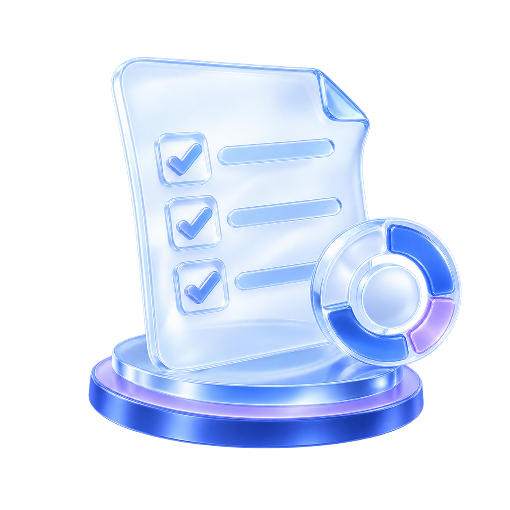
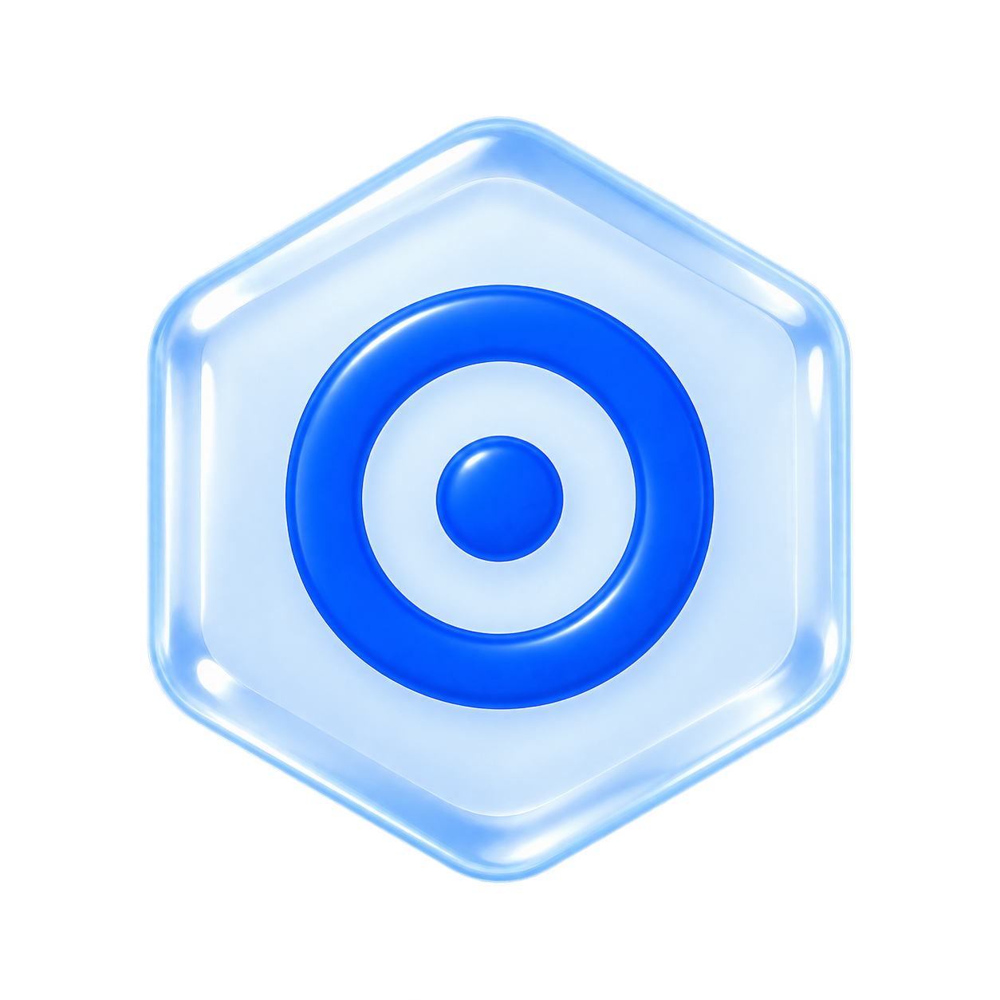

本次得分率?章测试的得分与总分，只计算当前章的题目分数
62%
得分 29 分满分 46 分
用时 25:10
得分分析
本章案例题目数
5个
本章案例题分值共
46分
您的得分
29分
非本章案例题目数：2个|
非本章案例题分值共：25分|
您的得分：12分


知识短板分析
本区域汇总展示本次得分不足题目分数60%的题；这些已自动加入全局错题本。
错题目录
案例1
案例1-2
4分（满分9分）
考点：13.1-管理基础
案例2
案例2-2
2分（满分9分）
考点：13.2-项目资源管理
案例2-3
1分（满分6分）
考点：13.3-团队建设与管理
案例3
案例3-2
2分（满分9分）
考点：13.4-冲突管理
案例1-2 错题解析
案例1-材料型问答题
阅读下列说明，回答问题1至问题4，将解答填入答题区的对应栏内。
【说明】
某信息系统集成公司承接了一个电子政务信息系统项目，客户要求6个月内上线投入使用。考虑到项目的重要性，公司任命资深的研发工程师小李为项目经理。小李随后从公司各个研发部门抽调技术精英，组建了一个跨部门的项目团队。根据合同要求，小李向公司采购部门提交了物料申请单。项目初期，团队成员都对项目的成功充满了期待，但在技术路线的选择上，团队成员小张和团队的资深设计师小王产生了分歧。两人多次沟通后仍然无法达成共识。小张觉得自己的技术路线更为先进，而小王则认为自己的方案更加贴近市场需求。小张和小王都比较孤傲，谁也不妥协。在这种情况下，小李根据自己的研发经验，认为小张的技术路线更好，因此要求小王按小张的方案开展工作，小王虽然表面答应了，但内心并不认可。
随着项目的推进，团队在短短两个月内就遇到了重重困难。尽管大家都在加班加点地工作，但进度仍然不如预期。团队成员开始互相指责，有的觉得考核标准不清晰，还有的抱怨人员分配不符合项目实际需求。同时，所订购的服务器也迟迟未到货，项目严重滞后，小李感到压力巨大，项目团队陷入了困境。公司高层得知情况后，决定介入并重新评估项目的状况。
问题2
结合案例，简要说明项目团队建设经历各阶段的主要特点，并指出当前项目团队建设处于的哪个阶段？
你的答案：
111
批阅结果：
该题总分7分，实得0分
未作实质性内容，五个团队建设阶段的名称及特点均未涉及，当前所处阶段也未作答。
评分规则：
7分：每阶段1分（名称和特点各0.5分，阶段名称需要一致，特点意思相近即可），顺序不可改变，第二问2分，共7分 特点得分点：1、形成阶段：初步组建，期待美好 2、震荡阶段：冲突显现，怀疑领导 3、规范阶段：信任建立，认可领导 4、发挥阶段：高效协作，相互依赖，拥有荣誉感和解决问题的能力 5、解散阶段：任务完成，团队解散
本题考核章节知识：
13.1-管理基础
参考答案
1、形成阶段：在本阶段，团队往往对未来有美好的期待。
2、震荡阶段：个体之间开始争执，互相指责，并且怀疑项目经理的能力。
3、规范阶段：团队成员开始相互信任，项目经理能得到团队的认可。
4、发挥阶段：团队成员之间相互依靠，平稳高效地解决问题。这时团队成员的集体荣誉感会非常强。
5、解散阶段：所有工作完成后，项目结束，团队解散。